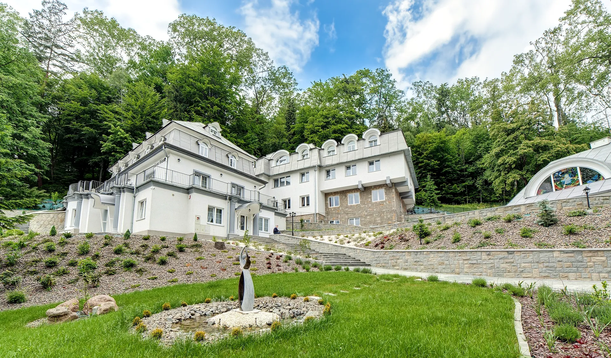
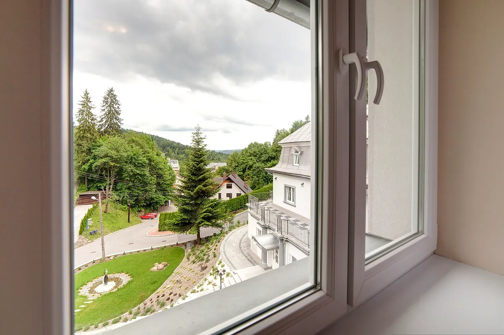
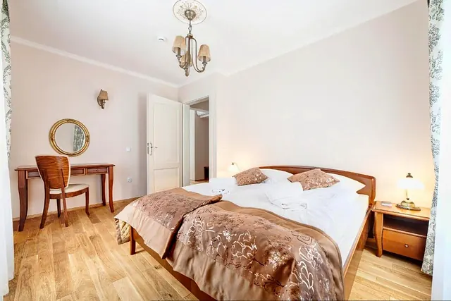
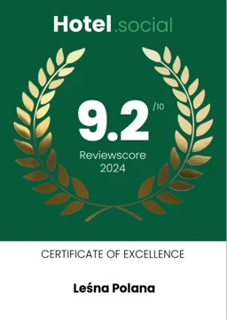
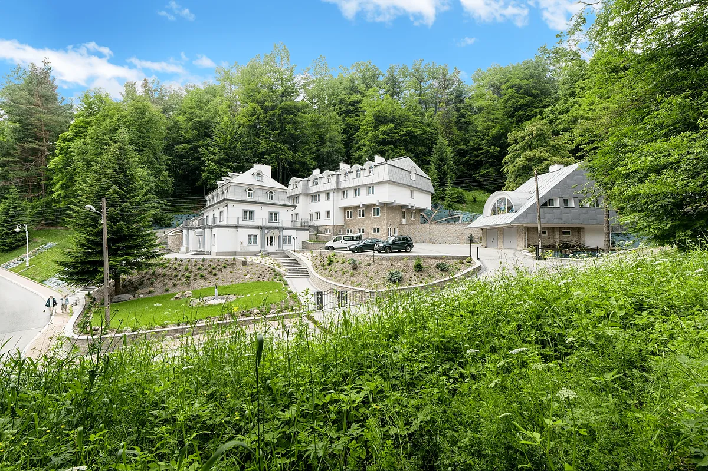

Willa Leśna Polana w Krynicy-Zdroju
Od 1927 roku na słonecznym stoku Jasiennika, tuż przy lesie. Cisza, śniadania w formie bufetu i grota solna na miejscu.
1927-2027. Sto lat Leśnej PolanyW 2027 roku willa obchodzi jubileusz. Poznaj jej historię.Odpocznij w Leśnej Polanie
Willa stoi na słonecznym stoku góry Jasiennik, na skraju lasu, kilka minut od krynickiego deptaka.
Przyjmujemy gości przez cały rok: na wczasy i weekendy, wyjazdy lecznicze i świąteczne, rekolekcje, pielgrzymki, konferencje i przyjęcia. Pokoje mają drewniane podłogi, łazienki i garderoby, a rano czeka śniadanie w formie bufetu.
- Śniadania bufetowe
- Grota solna w cenie
- Kaplica
- Taras z widokiem
- Bezpłatny parking
- Wi-Fi


Pokoje
Pokoje od jednej do sześciu osób. Każdy z łazienką, suszarką, biurkiem, garderobą i Wi-Fi.

Pokój jednoosobowy
1 osoba
od 130 zł za dobę

Pokój dwuosobowy
2 osoby
od 260 zł za dobę

Pokój trzyosobowy
3 osoby
od 370 zł za dobę

Pokój rodzinny
4 osoby, rozkładana sofa
od 490 zł za dobę

Studio dwupokojowe
do 6 osób, dwa pokoje
od 510 zł za dobę
Ceny za pokój za dobę w sezonie 7.09-20.12.2026, bez wyżywienia. Dzieci do 3 lat bezpłatnie, do 12 lat 20% rabatu.
100 lat Leśnej Polany
W 2027 roku willa obchodzi stulecie. Since 1927 to dla nas nie hasło, tylko adres z historią.
- Początek XX w.Willa powstaje według projektu czeskiego architekta Ruliszka.
- Gość williW Leśnej Polanie gościł światowej sławy tenor Jan Kiepura.
- Ostatnie lataGeneralny remont i wyższy standard wypoczynku, przy zachowaniu charakteru willi.
- 2025Złoty Laur Zaufania, I miejsce w powiecie nowosądeckim.

Pobyty w Leśnej Polanie
Przygotowujemy pobyty dla gości indywidualnych i grup zorganizowanych, a w ferie, wakacje i święta specjalne oferty.

Wczasy i weekendy
Taras z widokiem, las za oknem i śniadania w formie bufetu.

Wyjazdy dla zdrowia
Grota solna w cenie pobytu, sauna, hydromasaż i wody Krynicy.

Święta w górach
Wielkanoc i Boże Narodzenie przy wspólnym stole, bez pośpiechu.

Rekolekcje, oazy, pielgrzymki
Kaplica pw. św. Jana Pawła II na miejscu, w ciszy nad strumykiem.

Konferencje i szkolenia
Klimatyzowana sala z projektorem, ekranem i nagłośnieniem.

Przyjęcia okolicznościowe
Rodzinne uroczystości w stylowych wnętrzach willi.
Grota solna, sauna i kaplica
Na miejscu zadbasz o zdrowie i o spokój ducha, bez wychodzenia z willi.
Grota solna i kaplica są dostępne dla gości w cenie pobytu. Saunę, hydromasaż i masaż klasyczny zamówisz w recepcji.
- Grota solna, parking, Wi-Fi, kaplicaw cenie
- Sauna, 60 minut35 zł / os.
- Hydromasaż, zabieg50 zł / os.
- Masaż klasycznyok. 150 zł / os.

Co mówią nasi goście
Opinie z Google.
„Byliśmy tydzień w Leśnej Polanie, pokoje i łazienka bardzo ładne i czyste, śniadania bardzo dobre, owoce, ciasto. Na tarasie można sobie wypić kawę i podziwiać widoki, cisza i spokój. Piękna kaplica, jest to miejsce dla ciała i duszy. Panie bardzo miłe, na pewno tam wrócimy. Polecam Willę Leśna Polana.”
„Pensjonat genialny. Cisza i spokój. Super właścicielka. Bardzo miła obsługa. Bezpieczny parking na terenie. W pokojach czyściutko i ciepło. Śniadania pyszne i obfite w formie bufetu. Cena pobytu jedna z niższych w Krynicy i na pewno adekwatna do jakości. Gorąco polecam. Kiedy ponownie będę w Krynicy, chętnie znów tu zamieszkam.”
„Polecam to miejsce. Byłam w marcu. Wszystko super. Uprzejmi pracownicy i pani na recepcji bardzo miła. Pokoje ładne i zadbane. Miejsce przyjazne dla dzieci. Czułam się jak w domu. Sam budynek z zewnątrz i w środku robi wrażenie.”
Złoty Laur Zaufania 2025
W plebiscycie K&K Promotion Leśna Polana zajęła I miejsce w powiecie nowosądeckim. Wyróżnienie przyznają klienci.
- Orły Hotelarstwa 2025Laureat konkursu
- Booking.com Traveller Review Awards2020 z oceną 9,2 oraz 2026

Hotel.social Certificate of Excellence 2024Ocena gości 9.2 / 10

Krynica-Zdrój na wyciągnięcie ręki
Górskie powietrze, wody mineralne, pijalnie i szlaki Popradzkiego Parku Krajobrazowego. Zimą stacje narciarskie w Słotwinach i na Jaworzynie, latem wędrówki i Festiwal im. Jana Kiepury.
Do Pijalni Głównej jest od nas ok. 1 km.
Dojazd i mapaZapraszamy do Leśnej Polany
Wolne terminy i ceny na wybrane dni sprawdzisz od razu w systemie rezerwacji. Pobyty grupowe i rekolekcje ustalamy telefonicznie lub mailowo.